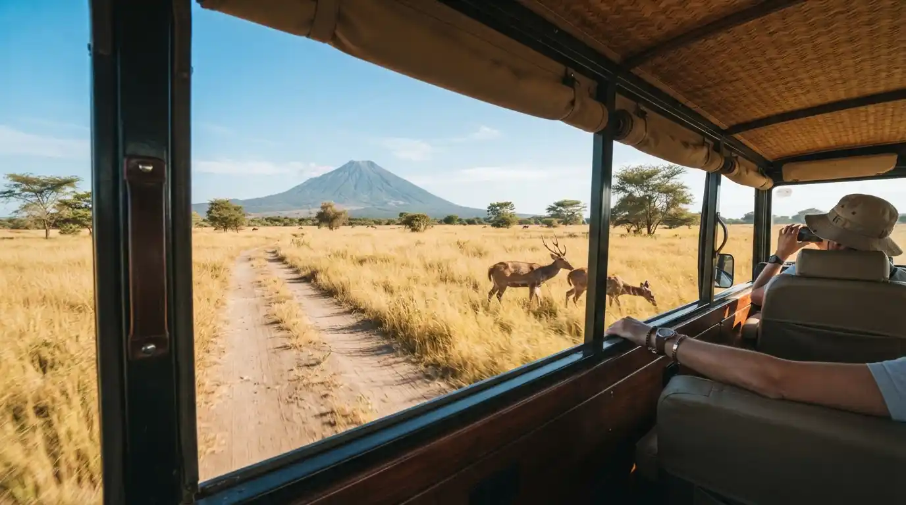

Panduan Wisata Taman Nasional Baluran Banyuwangi
Informasi lengkap seputar Taman Nasional Baluran, mulai dari rute, harga tiket, hingga tips melihat satwa liar di savana Bekol.

Taman Nasional Baluran adalah kawasan konservasi alam yang terletak di ujung timur Pulau Jawa, berbatasan langsung dengan Selat Bali. Dijuluki "Africa van Java", taman nasional ini terkenal dengan savana luas yang menyerupai padang rumput Afrika, dihuni oleh berbagai satwa liar seperti banteng, rusa, kerbau liar, merak, dan berbagai jenis burung.
Selain savana Bekol yang ikonik, Baluran juga menawarkan keindahan pantai berpasir putih di Pantai Bama, hutan mangrove, dan ekosistem yang beragam. Pengunjung dapat menikmati safari satwa liar, snorkeling, dan menjelajahi keindahan alam yang masih terjaga keasliannya.
Ringkasan Cepat
Informasi penting seputar Taman Nasional Baluran
Lokasi
Kecamatan Banyuputih, Kabupaten Situbondo, Jawa Timur (perbatasan Banyuwangi)
Jarak
±60 km dari pusat kota Banyuwangi (sekitar 1,5 jam berkendara)
Tiket Masuk
Rp 15.000 (WNI, hari biasa), Rp 17.500 (WNI, akhir pekan), Rp 150.000 (WNA, hari biasa), Rp 225.000 (WNA, akhir pekan)
Jam Buka
07:30 - 17:00 WIB (setiap hari)
Waktu Terbaik
Musim kemarau (Mei - Oktober), pagi hari untuk melihat satwa liar
Aktivitas Utama
Safari satwa liar, snorkeling di Pantai Bama, birdwatching, trekking hutan
Tips & Persiapan Berkunjung
- Datanglah pagi hari (sekitar pukul 06:00 - 09:00) untuk peluang terbaik melihat banteng, rusa, dan satwa liar lainnya di savana Bekol.
- Gunakan pakaian berwarna netral (cokelat, hijau, atau krem) agar tidak mengganggu satwa liar dan lebih mudah menyatu dengan alam.
- Bawa bekal air minum yang cukup, karena cuaca di savana bisa sangat panas terutama saat musim kemarau.
- Jangan memberi makan satwa liar dan selalu jaga jarak aman, terutama dengan banteng yang bisa berbahaya jika merasa terancam.
- Jika ingin snorkeling di Pantai Bama, bawa perlengkapan sendiri atau sewa di lokasi. Kondisi terumbu karang di sini cukup baik.
- Ikuti aturan taman nasional dan jangan membuang sampah sembarangan demi menjaga kelestarian ekosistem Baluran.
Galeri Foto
Keindahan Taman Nasional Baluran yang memukau
Peta Lokasi
Paket Wisata Terkait
Pilihan paket wisata untuk mengunjungi Taman Nasional Baluran
Open Trip Baluran Menjangan
Kombinasi safari darat di Savana Bekol Baluran dan snorkeling menikmati keindahan bawah laut Pulau Menjangan.
Lihat Detail
Private Trip Baluran Safari
Perjalanan eksklusif menjelajahi Africa van Java dengan mobil pribadi, bebas menentukan waktu dan spot foto.
Lihat Detail
Open Trip Ijen Baluran 2H1M
Paket hemat gabungan untuk menikmati Blue Fire Kawah Ijen dan pesona satwa liar di Taman Nasional Baluran.
Lihat DetailPertanyaan yang Sering Diajukan
Informasi umum seputar kunjungan ke Taman Nasional Baluran

Jam berapa Taman Nasional Baluran dibuka?
Taman Nasional Baluran umumnya dibuka mulai pukul 07:30 WIB hingga 17:00 WIB setiap hari. Untuk menginap atau berkemah, tersedia fasilitas di area tertentu dengan izin khusus dari pengelola.
Kapan waktu terbaik melihat satwa liar di Baluran?
Waktu terbaik untuk melihat satwa liar seperti banteng, rusa, dan merak adalah pagi hari antara pukul 06:00 - 09:00 WIB, saat hewan-hewan tersebut aktif mencari makan di savana Bekol. Musim kemarau (Mei - Oktober) adalah waktu ideal karena savana lebih terbuka dan satwa lebih mudah terlihat.
Apakah ada aktivitas selain safari di Baluran?
Selain safari satwa liar di savana Bekol, pengunjung juga dapat menikmati snorkeling dan berenang di Pantai Bama, birdwatching (Baluran memiliki lebih dari 155 jenis burung), trekking di hutan mangrove, dan berkemah. Tersedia juga menara pengamatan satwa di beberapa titik.
Apakah anak-anak boleh masuk ke Taman Nasional Baluran?
Ya, Taman Nasional Baluran sangat ramah keluarga dan cocok untuk anak-anak. Namun, selalu awasi anak-anak dan jaga jarak aman dari satwa liar, terutama banteng. Pastikan anak-anak tidak berlari atau membuat keributan yang dapat mengejutkan hewan.
Siap Menjelajahi Taman Nasional Baluran?
Hubungi kami sekarang untuk merencanakan perjalanan Anda ke Taman Nasional Baluran. Kami siap membantu Anda mendapatkan pengalaman safari satwa liar terbaik di Africa van Java.